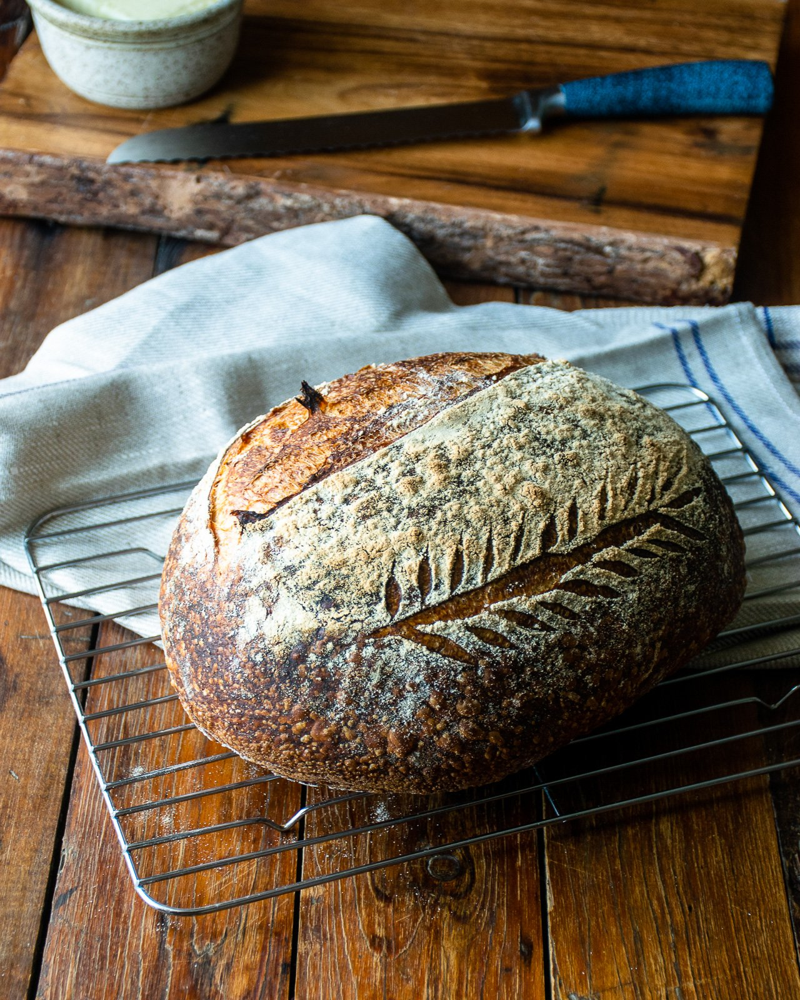

Sourdough Bread

Sourdough is known for its characteristic tangy flavor, chewy texture and crisp, crackly crust.
From a health standpoint, it dominates when compared to supermarket loaves.
The naturally occurring acids and long fermentation help to break down the gluten, making it more digestible and easy for the body to absorb.
And it tastes darn good!
Ingredients
- Sourdough starter
- Warm water
- Olive oil
- Bread flour
- Sea salt
Steps
- In a large bowl, add the sourdough starter, water and olive oil. Mix with a fork to combine.
- Add the flour and salt. Continue mixing with your fork until the dough becomes stiff.
- The dough will be dry and shaggy. Cover the bowl with plastic wrap, reusable wrap or a clean, very damp kitchen towel. Let rest (autolyse) for 30 minutes or up to 1 hour, if preferred
- After the dough has rested: return to the bowl and work the dough into a rough ball, about 15 seconds.